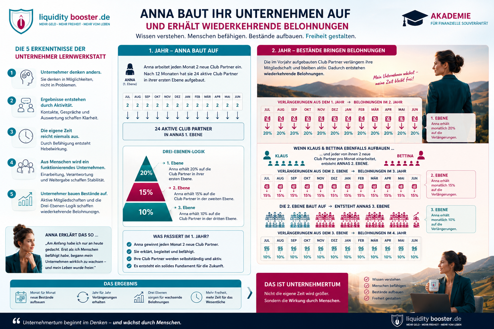

Vom Wissen zum Gesamtbild
Anna beginnt nicht mit einem fertigen Unternehmen. Sie beginnt mit einer Entscheidung: Sie will ihre begrenzte persönliche Zeit nicht nur einsetzen, sondern daraus eine wiederholbare Wirkung aufbauen.
Im ersten Jahr arbeitet sie jeden Monat zwei neue Club Partner ein. Nach zwölf Monaten sind daraus vierundzwanzig aktive Club Partner in ihrer ersten Ebene entstanden. Gleichzeitig lernen Klaus, Bettina und weitere Partner, denselben Weg selbstständig weiterzugeben.
Im zweiten Jahr zeigt sich der langfristige Unterschied: Die im Vorjahr aufgebauten Mitgliedschaften können verlängert werden. Dadurch können Bestände erneut wirtschaftlich wirksam werden. Gleichzeitig wachsen die zweite und dritte Ebene durch Befähigung und Verantwortung weiter.
Nicht Annas persönliche Zeit wird größer. Die Wirkung ihres Wissens, ihrer Prozesse und der befähigten Menschen wächst.

Jetzt beginnt die Umsetzung.
Die Unternehmer-Lernwerkstatt hat Dir gezeigt, warum unternehmerische Wirkung nicht durch mehr persönliche Arbeitsstunden entsteht. Sie entsteht durch klare Aktivität, Auswertung, Befähigung, Verantwortung und einen gepflegten Bestand.
Wissen allein verändert jedoch noch kein Unternehmen. Der nächste Schritt besteht darin, diese Erkenntnisse in einem klaren täglichen Ablauf anzuwenden.
Die Mission führt Dich Schritt für Schritt durch die praktische Kontaktarbeit. Du erkennst, was heute zu tun ist, dokumentierst Ergebnisse und bleibst konsequent im täglichen Handeln.
Du nutzt die in der Lernwerkstatt festgelegten Zeitfenster, Kontakte, Gespräche und Einarbeitungsschritte nicht nur als Gedanken – sondern als echte Aufgaben in Deinem Unternehmeralltag.
„Ich habe verstanden, wie mein Unternehmen entstehen kann. Jetzt entscheide ich nicht mehr nur, was ich irgendwann tun möchte. Ich nutze Mission Dorade, um jeden Tag den nächsten klaren Schritt wirklich umzusetzen.“